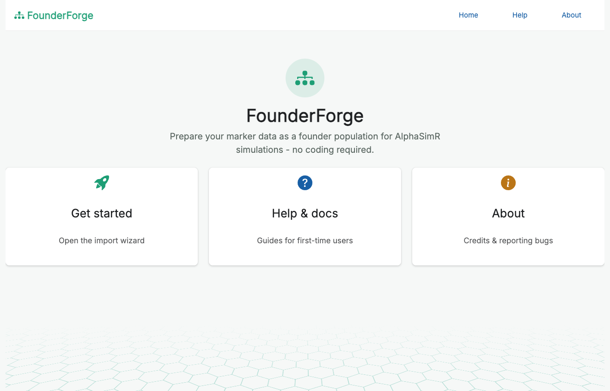
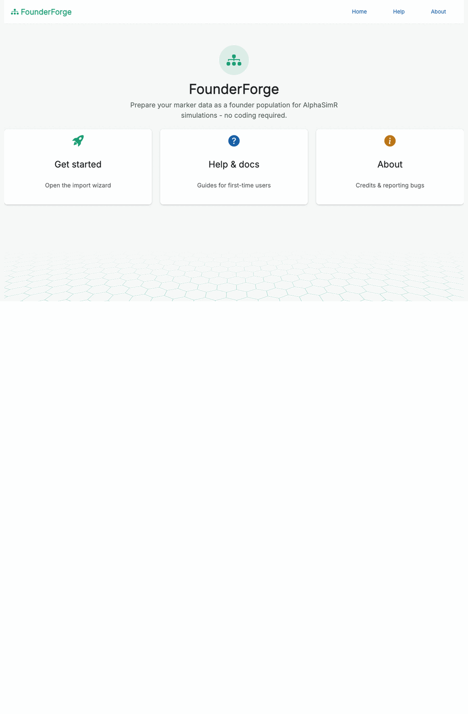
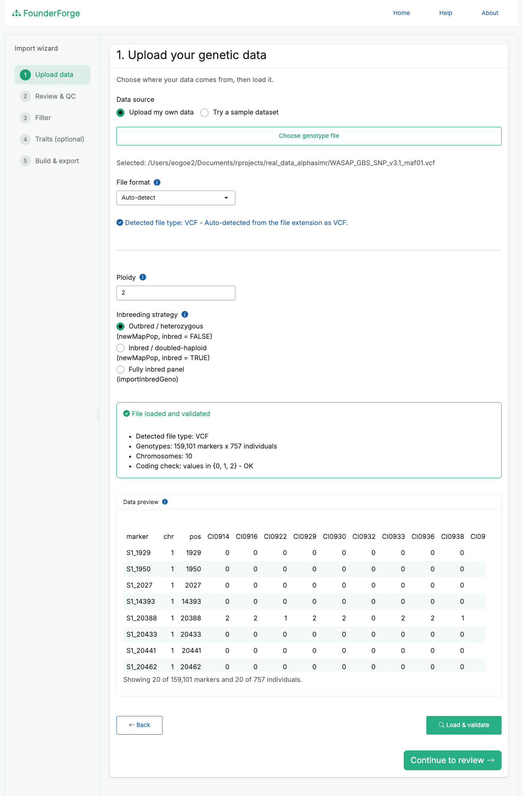
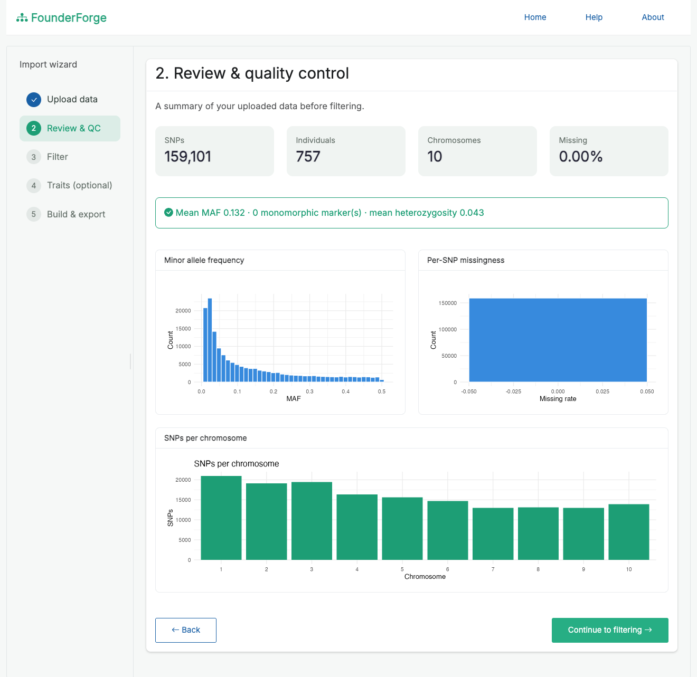
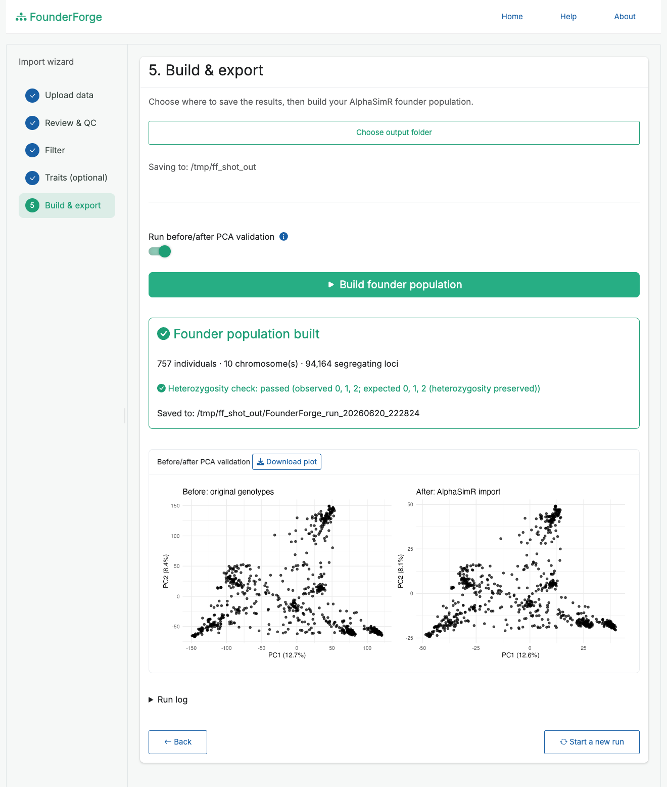

Prepare your marker data as a founder population for AlphaSimR simulations - no coding required.
FounderForge is a point-and-click Shiny application (built with the golem framework and packaged as an R package) that lets breeders, students and researchers prepare real marker data as a founder population for AlphaSimR simulations, without writing any R.

Overview
Starting an AlphaSimR breeding simulation from real data normally means hand-writing a script to read your genotypes, quality-control and filter them, split them into haplotypes, build a genetic map, and call newMapPop(). FounderForge wraps that whole process in a guided wizard so a non-programmer can do it reliably, see what is happening at each step, and get back exactly the objects AlphaSimR needs.
Features
- Guided five-step wizard (upload → review → filter → traits → build & export).
- Multiple input formats with automatic format detection and validation.
- Quality-control dashboard: marker/individual counts, missingness, MAF, heterozygosity, and per-chromosome distribution, with plots.
- Flexible filtering: MAF, per-SNP and per-individual missingness, monomorphic-marker removal, minimum SNPs per chromosome, and dropping named individuals - with a live “markers retained” preview.
- Choice of import strategy (outbred, inbred/doubled-haploid, or
importInbredGeno), each explained in plain language, so heterozygosity is handled correctly for your material. - Optional additive-trait definition to also produce an AlphaSimR
SimParam. - Optional before/after PCA validation to confirm the import preserved population structure, with a downloadable plot.
- Organised, timestamped outputs plus a full text log of the run, including an explicit “assumptions and approximations” section.
- Helpful, specific error messages; progress feedback on every long-running step.
- Bundled sample datasets so you can try the app immediately.
Supported file types
| Format | Extensions | Notes |
|---|---|---|
| VCF |
.vcf, .vcf.gz
|
Biallelic SNPs; the GT field is converted to 0/1/2. |
| HapMap | .hmp.txt |
TASSEL-style nucleotide calls (two-character and IUPAC). |
| Numeric matrix |
.csv, .rds, .rdata
|
A 0/1/2 dosage table with a marker map, or a saved list(geno, snp_map). |
| PLINK |
.raw, .ped/.map
|
.raw from plink --recodeA, or text .ped + .map. |
For wide numeric/HapMap-style tables, FounderForge auto-detects the chromosome, position and marker-id columns (chrom, pos, rs#) and ignores standard metadata columns (alleles, strand, REFERENCE_GENOME, etc.). Sample names with suffixes such as LINE1:FLOWCELL:LANE can be cleaned with one click.
How it works
- Upload - choose your own file (or a bundled sample), pick the import strategy and ploidy. The detected file type and a validation summary are shown, with a scrollable preview of the first rows and columns.
- Review & QC - inspect counts, missingness, MAF and per-chromosome marker distribution before changing anything.
- Filter - apply MAF / missingness / monomorphic / chromosome-size filters and preview how many markers remain.
-
Traits (optional) - add additive traits (QTL per chromosome, mean, variance, heritability) to build a
SimParam. - Build & export - choose an output folder, build the founder population, optionally run the PCA check, and save everything.
Under the hood: genotypes are normalised to a 0/1/2 matrix, missing calls are imputed, each genotype is split into haplotypes (preserving heterozygosity for outbred material), a per-chromosome genetic map is built (positions in Morgans, each chromosome starting at 0), and AlphaSimR::newMapPop() (or importInbredGeno()) is called.
Screenshots
The full wizard, from welcome to a finished founder population (sped up):

Upload and validate your data, with a live preview and detected file type:

Quality-control review before filtering (counts, MAF, missingness, markers per chromosome):

Build the founder population and confirm the import with before/after PCA validation:

Outputs and how they fit into AlphaSimR
Each run writes a timestamped folder:
FounderForge_run_<timestamp>/
├── founder_population/
│ ├── genmap.rds # list of per-chromosome genetic maps (Morgans)
│ ├── haplotypes.rds # list of per-chromosome haplotype matrices
│ ├── founder_pop.rds # the AlphaSimR MapPop object
│ ├── sim_param.rds # AlphaSimR SimParam (only if traits were defined)
│ └── rebuild_snippet.R # the exact constructor call used, for reproducibility
├── qc/ # qc_summary.csv and plots
├── validation/ # heterozygosity check, optional before/after PCA
└── logs/ # full run_log_<timestamp>.txtgenmap.rds and haplotypes.rds are precisely the inputs to AlphaSimR::newMapPop(); founder_pop.rds is the ready-to-use MapPop. To start a simulation from a saved run:
library(AlphaSimR)
founderPop <- readRDS("founder_population/founder_pop.rds")
SP <- readRDS("founder_population/sim_param.rds") # if you defined traits
# otherwise: SP <- SimParam$new(founderPop)
pop <- newPop(founderPop, simParam = SP)
# ... now cross, select, phenotype, etc.rebuild_snippet.R reproduces the founder population from genmap.rds + haplotypes.rds, so the import is fully auditable.
Installation
Requires R (>= 3.5.0). Install FounderForge and its dependencies:
# install.packages("remotes")
remotes::install_github("ebenogoe/FounderForge") # or install_local("path/to/FounderForge")Key dependencies (installed automatically): AlphaSimR, vcfR, data.table, bslib, bsicons, shinyFiles, shinyWidgets, shinybusy, DT, ggplot2. patchwork is suggested for the side-by-side PCA figure.
Running the app
FounderForge is designed to run locally so it can read large genotype files directly from disk (via shinyFiles) and write outputs to a folder you choose.
Sample data
Bundled example datasets (300 markers x 30 individuals, 3 chromosomes) ship in inst/extdata/ (sample_numeric.rds, sample_numeric.csv, sample.vcf, sample.hmp.txt). Load them in one click from the upload page, or download them from the Help & docs screen.
Assumptions and limitations
- The genetic map assumes a uniform recombination rate (1 cM/Mb); supply a real map for accurate distances.
- For outbred imports, phasing of heterozygous sites is arbitrary (genotypes are split, not phased).
- QTL positions are placed at random by AlphaSimR; trait means, variances and heritabilities are user-supplied assumptions.
All of these are recorded in each run’s log file.
Reporting bugs
Please open an issue (or email ebenezerogoe@gmail.com) and attach the logs/ file from the affected run - it captures every step from import to export.